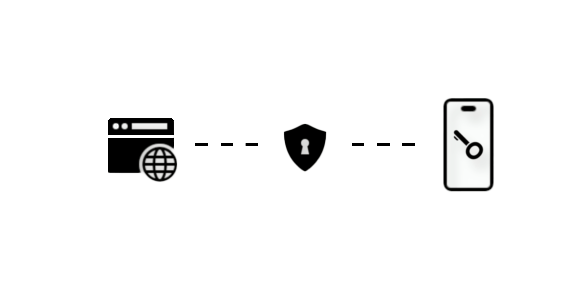
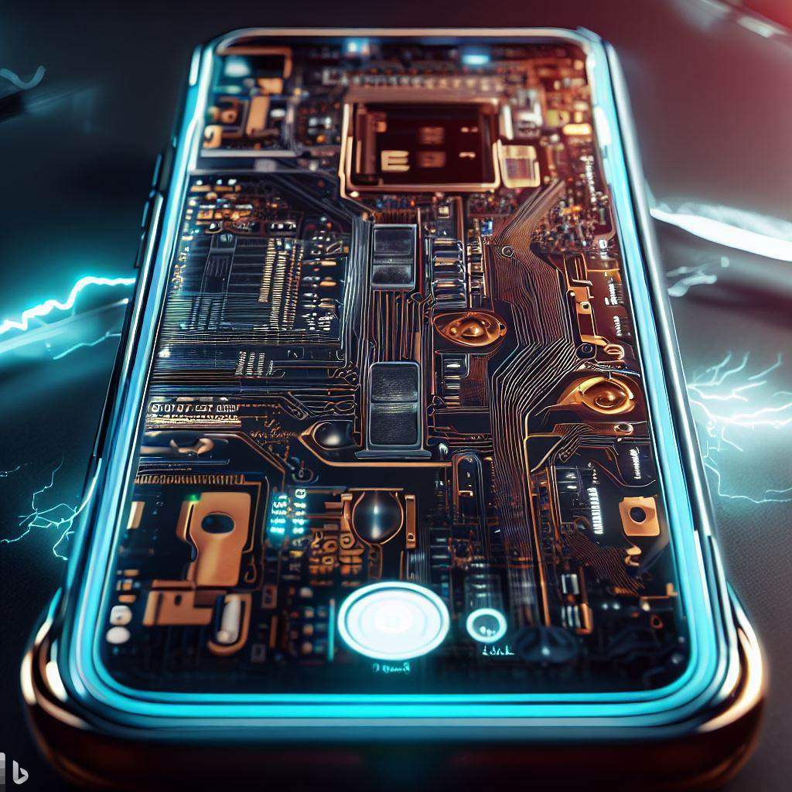

Le Passkey est un système d’identification lancé par Apple en septembre 2022 qui permet de remplacer les mots de passe par une clé de chiffrement unique synchronisée avec votre appareil pour chaque site internet ou application. L’objectif est de renforcer la sécurité des comptes en ligne en éliminant les mots de passe trop simples ou impossibles à retenir.
Tesla est une entreprise américaine spécialisée dans la conception et la production de voitures électriques, de batteries domestiques et de panneaux solaires. L'entreprise a annoncé son smartphone le "Tesla Model PI". C'est un téléphone portable de nouvelle génération innovant qui devrait être équipé d’une batterie de 7100 mAh et d’un système de recharge solaire. En outre, une fonction innovante est que le terminal inclut une interface cerveau-téléphone
